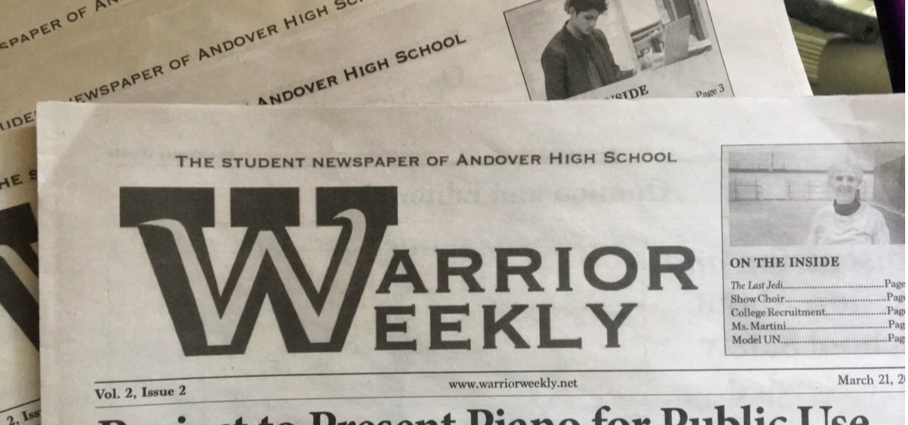

1 / 3

2 / 3

3 / 3

By Kinsey Ogden
At 7:30 am, while the crowds create chaos in the foyer and cafeteria, a gentle hum of chatter is the ambient soundtrack to the upstairs hallways. Students are scattered, sitting down on the floor - up against lockers, outside of classrooms, and even under the stairs. Two crevices between a grouping of lockers on the third floor used to house a similar situation, however now the lockers have been stripped from the walls and in their places are wooden benches that run along the perimeter.
While at first glance, the benches may not seem like much, but they hold more than one would expect. A reflective, white Wi-Fi router mounted on the ceiling transmits a wireless signal as two lights illuminate the area to be even brighter than the rest of the hallway and overhead vents regulate the room temperature. On the two small, inner walls, outlets allow students to recharge their devices without moving too far.
When asked about the new seating, sophomore Diana Kreismonis said, “They're a great place for big groups to convene without causing traffic or getting in the way of other students.”
Just five months ago, this idea didn’t even exist yet. It wasn’t until late October, when it came to the attention of Principal Conrad and the Facility Study Committee at AHS that, according to Conrad, “a lot of times, you’ll see that there are kids collaborating, but they’re sitting on the floor.”
From there, the idea started to formulate. Superintendent Berman stated that one day, he “noticed the locker alcove on the third floor and thought it would make a good experiment to see how that kind of space would be used by students.” After the idea was approved by Janet Nicolia, Director of Facilities in Andover, it started to morph from just a possibility to a reality.
Several Andover-based companies were involved: Landmark Finishes of Andover made the benches while Eaglepoint Builders created the area around the benches.You Good Construction then installed them. The arduous process of installing the benches not only involved removing the lockers, but also involved jackhammering out the concrete bases that the lockers previously rested on, crafting the benches offsite, and working in the school only during weekends and vacations weeks.
The long process created the comfortable location where students can sit in the morning that isn’t a floor coated with dirt, but they’re not just for before and after school.
According to Berman, the committee “wanted to provide students with a more relaxed environment in the school in general but also provide some breakout spaces for students to work together when they were doing group work in classrooms.”
Conrad said that the committee’s aim was to “create some collaborative spaces that were much more appropriate for our students,” so that when students are working in the hallways for classes, they’ll have a place to work all together.
While the areas may seem finished, the AHS Facility Study Committee is still working with Eagle Point Woodworkers to provide students even more options for collaborating there. Mrs. Nicosia, the Director of Facilities, revealed that “tables are being manufactured now and should be finished within about 3 weeks.”
The tables may be the final addition for those specific areas, but the committee isn’t finished with their work. The group will continue to work on building and installing more collaborative spaces for students throughout the building.
According to Conrad, “They’re part of a larger idea to try and make more collaborative spaces, and the ideas really came out of beginning to look at how to renovate the building in ways that could be done immediately.”
By Kinsey Ogden
What exactly is Ironstone Farm?
A therapy based farm, helping people with disabilities with horse based activities
What do you do at Ironstone Farm?
Since I’m a working student, I take care of the horses, tac them up, etc. etc. [I] throw hay, sometimes we volunteer with clients, but usually that’s more of a volunteer’s job. You have volunteers, which are like a step down from working students. A volunteer can become a working student, but need be, a working student [can] become a volunteer temporarily for like a lesson or something.
How did you get started there?
So, I think to become a volunteer you can show up at the place or… go to their website and see how to become a volunteer, and then first you have to do like a volunteer workshop and once you’ve done the workshop, you start volunteering. To become a working student, you have to be...picked for said job and you would have to do at least three months of volunteering, but I did six months because of personal reasons.
When did you start working there?
I think I became a volunteer in July; that’s when I did the workshop, July of last year. Then, I took a break and I organized...my interviews for said job… I became a fully fledged working student off-trial [the] second week of July.
What makes this job special as opposed to other occupations as a student?
You work with horses… because I don’t think other people usually work with horses.
What do you do exactly with the horses?
You tack them up, which is [putting] a saddle on them with the appropriate pads, bridle them (you put a bridle on them), do their feet. You throw hay, which is exactly how it sounds: you throw the hay into their racks and they eat it. You pick, which is picking the paddocks of horse manure. You do barn for the horses who are up in the barn for either medical reasons or they’re our mairs so we don’t put them in the herd yet…[Sweeping,] but that’s just prep work for throwing hay, and grain. [Grain’s] feeding the individual horses that need special mixtures of grain.
Do you get paid?
No, I don't get paid. It's credit based, so I get free lessons and free riding privileges.
How many hours do you work each week?
I work three three hour shifts each week, a total of nine hours.
Do you still work during the school year?
We have to work the entire school year, no breaks.